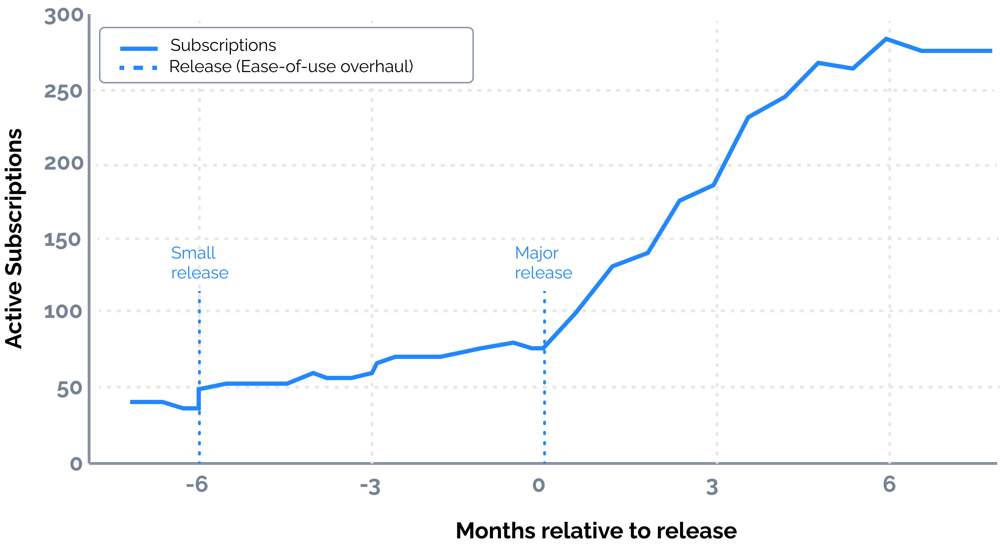
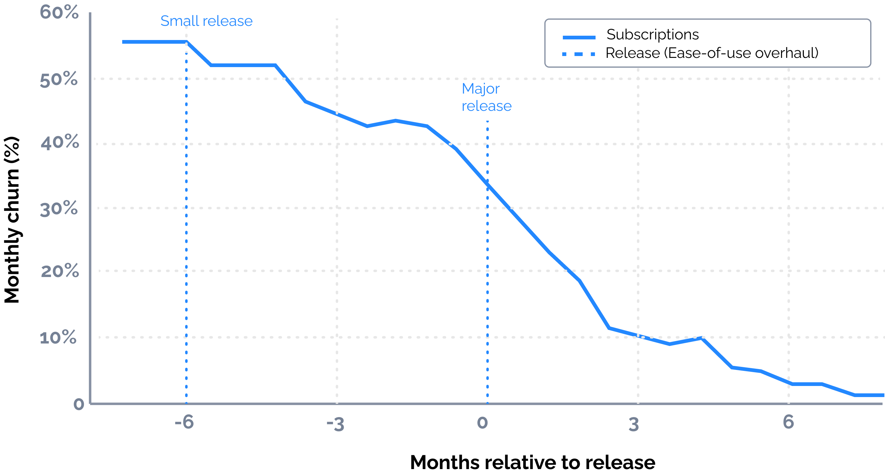
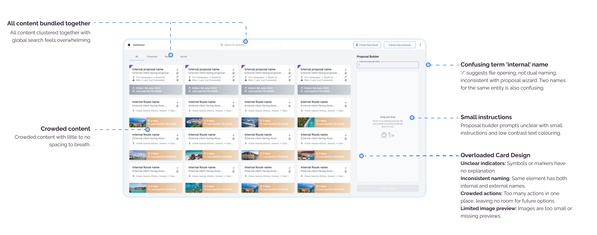
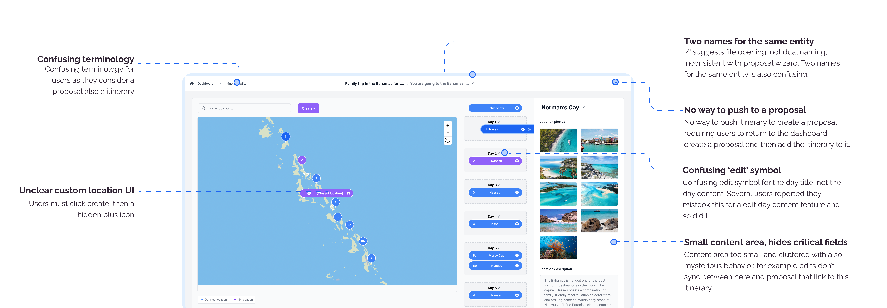
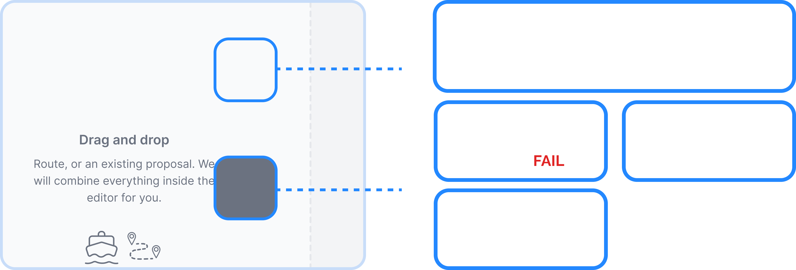
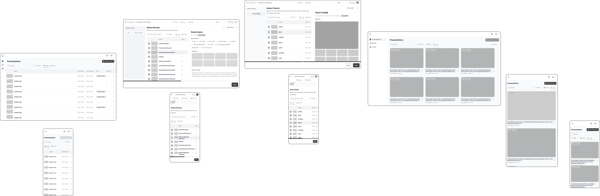
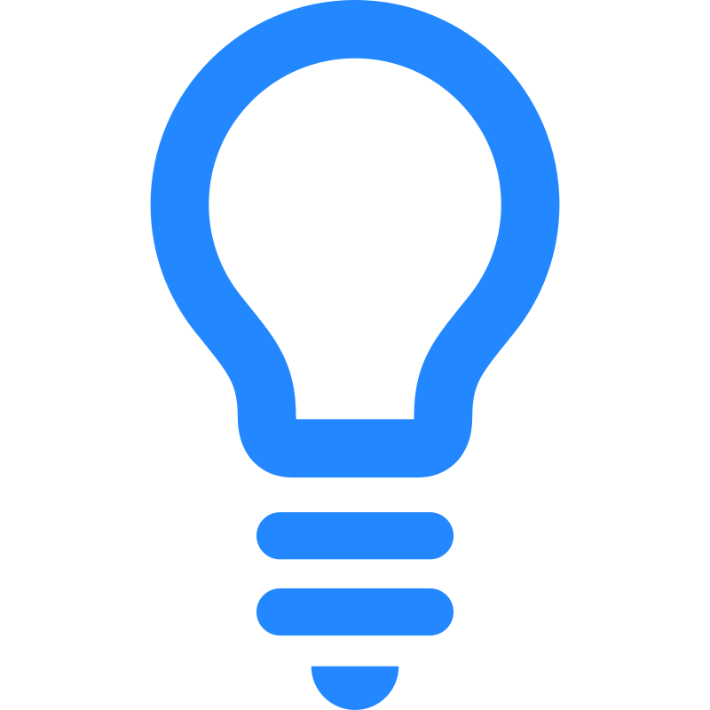

PART ONE
Project Overview
PROJECT OVERVIEW
The Opportunity
The existing platform, Trips, was designed to enable brokers and agents to generate client-facing brochures by leveraging the Le Cart itinerary database and a library of yachts. However, the platform consistently underperformed and failed to meet user expectations. Customers reported significant dissatisfaction with the experience, leading to a high churn rate and widespread cancellation of annual renewals. As a result, the product not only failed to deliver value but also negatively impacted the company’s reputation within the industry. Trips became associated with poor usability and unreliable performance, positioning the business as a provider of substandard software.
This presented a critical opportunity: to reimagine the platform, rebuild trust with users, and transform a failing product into a tool that genuinely enhanced the client engagement process.
Ankor Software
Role: Product Design Lead
Key Responsibilities
- Foundational research to uncover main sources of pain for users
- Propose feature updates
- Collaborate and generate wireframes to be discussed with technical team
- Conduct focus group reviews with high res prototype and synthesis feedback
- Prepare project for handoff
- Deliver roadmap for further feature rollout.
PROJECT OVERVIEW
Mission
Our mission was to transform Trips from an underperforming, frustrating platform into a
reliable and valued tool that empowered brokers and agents to deliver exceptional client
experiences. The business had suffered significantly as a result of Trips’ shortcomings—high
churn rates eroded the customer base, annual renewals declined sharply, and the company’s reputation
in the industry was damaged by being associated with poorly built software. This not only limited
growth but also weakened long-standing client relationships.
By addressing these challenges head-on, our goal was to rebuild trust, restore credibility in the
market, and create a platform that not only met but exceeded user expectations.
Core Issues addressed
01 High Churn Rate: A high churn rate was eating away at the platforms revenue stream
01 Damaged Reputation: The platform’s poor performance branded the company as a provider of low-quality software, weakening industry credibility.
01 Stalled Growth: Instead of driving adoption, Trips became a liability, limiting opportunities for expansion and reducing client acquisition.
Post Launch of Fix Impact
01 80% of users reported to be promoters of the platform after major release.
02 Restored trust and reputation for Ankor in the industry
03 Users reported they feel supported with carefully curated help information for self paced training.
03 Number of clicks to create a presentation have declined by 200% when compared with stats 6 months before launch changes.
PROJECT OVERVIEW
The Impact
Trips is now back on track with high subscription rates and low churn percentages thanks to the ease-of-use odyssey.


Small ease-of-use release (pilot, 6-month window)
- Churn ↓ 20% over 6 months as onboarding and core flows were simplified.
- Active subscriptions +10 immediately post-release, then ~2× vs. baseline by month 6.
- Impact: Stabilized retention, created a healthier growth slope ahead of the major launch.
Major ease-of-use release (full rollout, next 6 months)
- Churn ~0 (“approached negligible”) following the overhaul.
- Subscriptions +600% in 6 months (≈ 7× baseline level).
- Impact: Dramatic expansion of the active base and revenue trajectory; materially improved NRR and LTV.
PROJECT OVERVIEW
Mockups
Static, high-fidelity screens were developed in Figma, which gave a preview of the look and feel of the final product. I explored user interface design elements such as typography, colour, iconography, size, shape and more.
01
Sign up
A brief intro outlining the basic task flow when creating a presentation.

02
Onboarding
During onboarding, users set up their personal details, company information, and branding preferences (such as fonts and primary colors), and can also invite their team to collaborate — all within a single workflow.
03
Dashboard - Card View
The dashboard was redesigned to improve navigation, featuring a cleaner card layout and dedicated sections for Presentations, Routes, and Yachts, each with a clear call to action.
04
Dashboard - Table View
Table view developed in order to allow users to quickly scan for the item they are looking for, or compare features in search or filtering results.
05
Guided Workflow - Step 1 & 2
Steps 1 & 2 of the guided workflow for creating a presentation containing yachts, routes and the ability to modify content and design elements before sharing with a client.

06
Guided Workflow - Step 3
Step 3 allows users to modify the design of presentations.

07
Guided Workflow - Mobile
A guided workflow for Charter Brokers building a presentation containing yachts, routes and the ability to modify content and design elements before sharing with a client.
PROJECT OVERVIEW
Design Process
Trips was a struggling platform that was turned around and is now the strongest in its niche in the boating and yachting sector. This was achieved by:
- Empathising: Understanding the users pain points
- Develop: Develop a method to improve usability
- Validate: Validate designs with rigorous testing

PART ONE
Project Overview
DISCOVER
We already knew alot about the primary user: Charter Brokers
A charter broker acts as the middle point between clients and yacht owners or operators. Their role is to understand a client’s needs—such as budget, destination, and type of experience—and then match them with the most suitable yacht or vessel. They handle the negotiation of terms, pricing, and contracts, while also coordinating with crew and owners to ensure availability and smooth logistics. Beyond booking, charter brokers provide advice, manage expectations, and oversee details so the client has a seamless and tailored charter experience.
PART THREE
Research
I interviewed 10 Customer success & sales people at Ankor & 10 frustrated users
RESEARCH
Key Insights
- Limited User Engagement: Users rarely log in, forget key flows after onboarding.
- Insufficient Prompts: Lack of tooltips, warnings, and guidance causes frequent user errors.
- Unclear Data Saving: Confusion between saving to an itinerary versus a proposal.
- Complex Steps: Tasks feel difficult and non-intuitive, even after training.
- Limited Self-Learning: No knowledge base or walkthroughs; users rely on success team.
- Unclear Terminology: Terms like "proposal" vs. "itinerary" confuse users.
- Need for Quick Proposals: Users want fast, template-based options before customization.
- Overwhelming Flexibility: Too many choices leave users feeling confused.
- Sales/Success Knowledge Gaps: Staff unaware of many platform features.
- Distrust in data: Users felt they couldn't trust the data we supplied.
- Latency & Image Loading: Users felt the application was 'Slow' and that things took ages to load.
RESEARCH
Heuristic Evaluation
01
The Dashboard
02
The itinerary Editor
03
The Proposal Editor

RESEARCH
User Journey Map
I created a journey map to analyse the touchpoints between the user and the product. This helped me empathise with the user, highlight frustrations and improvement opportunities.

RESEARCH
State Diagram

Image showing the current user flow: A user creates a proposal and then wants to edit their itinerary from within the proposal editor. To do this, they must leave the proposal editor, update the itinerary, and reload it into the proposal. When they return, they discover their design work has been lost because the updated itinerary overwrote their changes.
Main system issues
Back and forth: Updating routes forces users to return to the dashboard, often losing design edits.
Two editors: Separate editors for itineraries and presentations cause confusion.
Two itinerary types: Ankor-owned vs. user-owned adds more confusion.
Need for simple workflow: Users want a clear, two-way workflow to update both itinerary content and presentation design.
Lost design work: Changes made in the itinerary editor overwrite design work in the proposal editor, forcing users to redo edits.
RESEARCH
Accessibility Study
I audited the areas that looked low-contrast and measured their ratios. Results were good, not great.

RESEARCH
ALT Text & Font Sizes
I reviewed the platform’s use of alt text and tested font scaling for users with vision impairments. I found that the fonts were sized in pixels instead of rem, which prevented proper scaling, and that icons and images lacked alt text descriptions. Both issues represent poor accessibility practices.

RESEARCH
Latency issues
I reviewed the application and identified several latency issues, especially when saving presentations. Users often felt uncertain about whether their work was actually saving. I discovered that if the browser was closed before the system’s autosave completed, the work would not be saved. For users with poor internet connections, this meant they could lose significant progress without realizing it.
PART FOUR
Ideation
IDEATE
Focus Group with Experts & stakeholders
I facilitated a workshop with key stakeholders and experts using the SCAMPER methodology
PART FOUR
Decide
DECIDE
Scope
We outlined the features/tasks we wanted to tackle for the 'Ease-of-Use' Odyssey. Some we had a clear understanding on what needed to be done, others we wanted to explore some options further.
Small Release
- Update Product Feature terminology: eg “Proposal Wizard” to “Presentation Editor” for simplicity
- Website payment terminal & New User Onboarding for usability
- Dashboard Pages & Card redesign for clarity
- Font Sizing for accessibility
- Latency & Image Loading
Major Release
- Integrated itinerary editing to Presentation editor for usability
- Stepper/Guided presentation builder for reassurance
- Dashboard table view for speed
- CA verified Data tags for Yachts to build trust
Outside of Scope
- Brochure redesign
- Advanced presentation editing: Requests for features such as custom fonts, additional section styles, and design controls (borders, shadows, etc.) are acknowledged but deferred to a future phase to avoid scope creep.
- Edits to Custom locations: We saw alot of usability issues when users create a location however this would have to wait as only a small minority of users need to use the feature.
STARTING THE DESGIN
Applying UX Laws
I reviewed the foundational UX laws - a series of best practices for building user interfaces. Using psychology in design helped shed light on user expectations, improving the overall user experience.
UX laws applied
Fitt’s Law
Large buttons placed in the thumb zone ensure users can quickly, easily and accurately access major functions
Hick’s Law
Highlight compulsory fields to avoid overwhelming users, and place optional fields in separate location
Jakob’s Law
Use familiar UI patterns for input fields such as dropdowns, error states, etc to leverage existing mental models
Von Restorff Effect
The distinct Ankor brand colour (blue) guides users through each step of the core task flow
Zeigarnik Effect
Stepper bars at the top provide a clear indication of progress to motivate users to complete tasks
Gestalt Principles
- Similarity: cards that look similar have the same function
- Proximity: elements that are close together are more related
- Common region: elements located in the same area are grouped together
- Simplicity: abstract symbols and icons require less mental effort
STARTING THE DESIGN
Information architecture
In collaboration with our technical lead, I was able to create a more ideal workflow for our users based on their goals and edge cases, moving and editing content between the itinerary and presentation editor. A bit of work was needed to untangle the different data packets.

STARTING THE DESIGN
Desired Workflow
In collaboration with our technical lead, I was able to create a more ideal workflow for our users based on their goals and edge cases, moving and editing content between the itinerary and presentation editor. A bit of work was needed to untangle the different data packets.
STARTING THE DESIGNS
Digital Wireframes
I created a series of wireframes to address each issue and then shared them with key stakeholders and subject matter experts to gather their feedback.
View Wireframes

STARTING THE DESIGN
Critique
Highlights from draft designs I presented to my cross-functional team for feedback. By inviting others to have a voice in the design process, I can incorporate their unique specialist knowledge and caught mistakes early.
STARTING THE DESIGNS
Usability Testing
I conducted a usability study to assess how easy it was for users to complete core tasks in the design. Study results were analysed and insights were used to iterate on the designs.
Study type: Unmoderated usability study with a prototype
Location: Worldwide | Remote
Participants: 10 people
Length: 10 mins
VALIDATE
Affinity diagram
Research data and observations from the usability study were organised into related groups. An affinity diagram helped identify common themes and patterns to form actionable insights.
VALIDATE
Key Insights
Some feedback was helpful, some was outside of the scope of the project, some gave me a new perspective.
Positive Feedback
Good General direction: Users reported they liked the general direction of a guided process and believed this was a step in the right direction.
Stepper well receieved: Feedback was positive about the stepper, users found it simple and intuitive.
Better Flow of information Users felt the saving, the overall flow of the app was much more clear.
Critical Feedback
Too many steps: Users reported that the process felt there were two many steps. Maximum 3 steps for the entire process.
Busy Design: Users felt the stepper was very 'Busy' particulalry the preview being a slide out view. A modal preview was advised.
Clickable items didn't look clickable: Items like the top navigation bar with the step titles didn;t look clickable but were.
PART FIVE
Production & Open Beta
DELIVER
Dashboard
- Dashboard card redesign: Redesign dashboard cards and layout to improve clarity and reduce confusion.
- Font sizing updates in code: Apply scalable font sizing using
remandemunits across the platform to improve accessibility for users with vision impairments. - CA verified Tacht Tags: Tags on all CA verified Yachts so users know that the yacht is managed by a real life Central agent.
DELIVER
Latency & LQIP
I worked with the development team to identify a number of latency areas that needed loading spinners and Low-Quality Image Placeholder (LQIP).
- Presentation Saving:Presentations were being automatically saved, but users didn't know that, so we implemented a saving indicator
- Image blurs:I spear headed the implementation of a Low-Quality Image Placeholder (LQIP) so previews and images didn't look empty while they loaded.
- Loading Spinners:We identified a number of locations where there were no loading indicators so we implemented some so users knew the data was arriving soon.
DELIVER
Stepper
The stepper allows users to build their presentations with a very clear process.
DELIVER
Mobile Responsivness
Users can now make presentations on the go and share within a few clicks.
DELIVER
Dark Mode & easy setting access
A number of additional features include dark mode and easy access to the users styles and settings from a universal actions bar at the top of their screen.
DELIVER
Launch Announcment Video
Watch a quick outro for the changes we launched which scaled the app and won over the users.
DELIVER
Help Center & Knowledge Base
I created online videos, learning resources and help articles to address common user questions and usability gaps in the platform. This evolved into a comprehensive knowledge base designed to provide clear guidance across the entire application.
PART SIX
Next Steps
NEXT STEPS
Road to the leading brochure and itinerary generation tool in the world
After the successful launch of Trips 2.0, the team and I planned the next phase of development to grow the platform into the world's leading brochure and presentation builder.
Monitor help center
Monitor help centre searches to improve content, address user pain points, and guide feature enhancements
Drive user onboarding and adoption
Drive adoption through educational workshops, champions program, and incentives.
Monitor Feedback
Provide feedback channels and actively review user critique about the app. Conduct more usability testing if necessary.
Measure Impact
Evaluate key metrics such as increased click through rates, presentations generated, and activity.
Build Video Content
Video content that work in tandem with the help centre articles.

Drive feature request roadmap
Continue building, testing and refining feature roadmap and workflows within the app.
NEXT STEPS
Reflection
As Product Design Lead for this application, I drove the end-to-end release for the 'Ease-of-use' Odyssey
Went Well
Research to validate pain points: We conducted research to confirm user frustrations and ensure we were addressing the right issues.
Progress over perfection: By focusing on solving the biggest pain points first, we reduced churn significantly and improved overall user satisfaction.
Flexible components: The platform was designed with adaptability in mind, making future updates and adjustments smooth and efficient.
To Improve
Rework of data architecture: The information architecture was so complex that integrating the route editor into the presentation editor became unmanageable. This work had to be paused and resumed later.
Validation prototype: Due to time constraints, the prototype was rushed, resulting in a disjointed user experience. Future prototypes should allow more time for proper execution.
Event marking in code: After launching Trips 2.0, setting up analytics was difficult because many actions lacked unique event identifiers. Although this was later fixed, a significant amount of early data was lost.
Audio Quality: When creating the help videos for Trips, the audio from my computer wasn't very good.
Mobile first: The mobile experience was treated somewhat as an after thought. Next time and moving forward we should be designing for mobile first.
NEXT STEPS
Testimonials
Raquel - Customer Success
"We just won back a user that we lost. [REDACTED] Has signed for a 1 year subscription with Trips. She was one of the first ones of trying the initial Trips version...I'm so happy, she was very hesitant at first but then when she saw our new interface she came round."
Andy - Customer Success
Another win for Trips! Old Trips customer brought back with CA well done..!
Mike CEO
"[REDACTED] purchased Trips off the website last night. It feels good for users to actually be able to do that now..."
Mike CEO
[REDACTED] purchased Trips off the website last night. It feels good for users to actually be able to do that now...